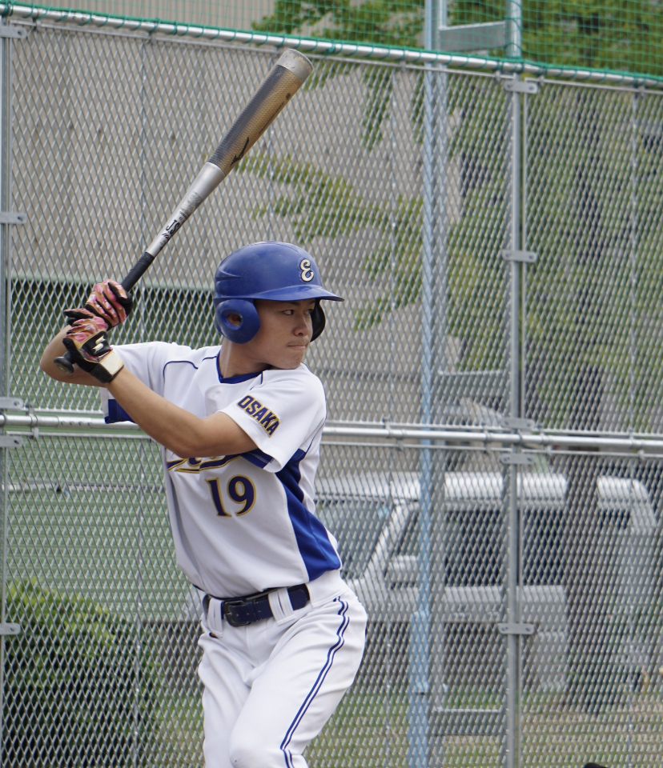
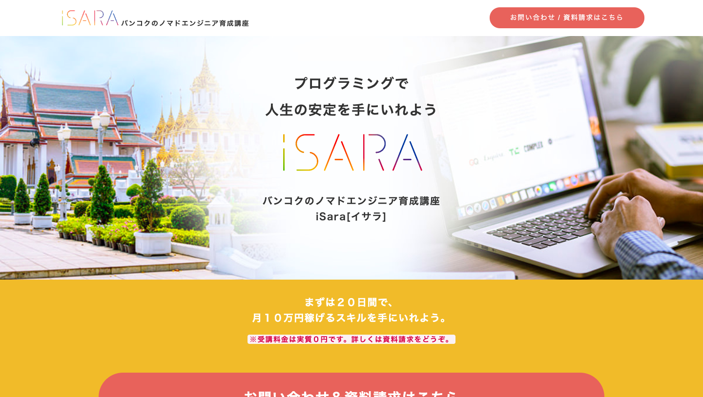
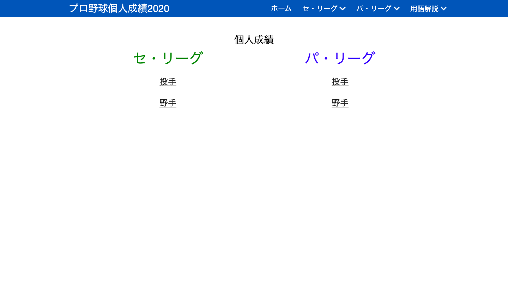
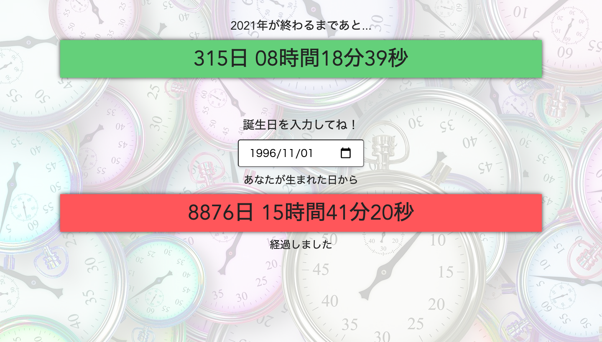
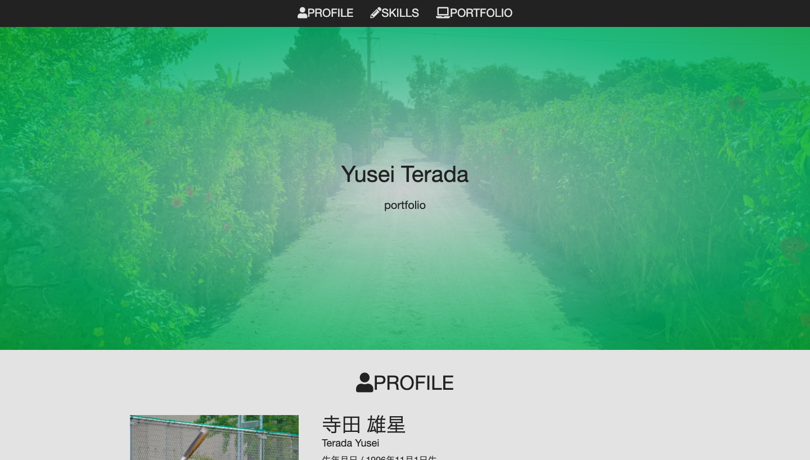
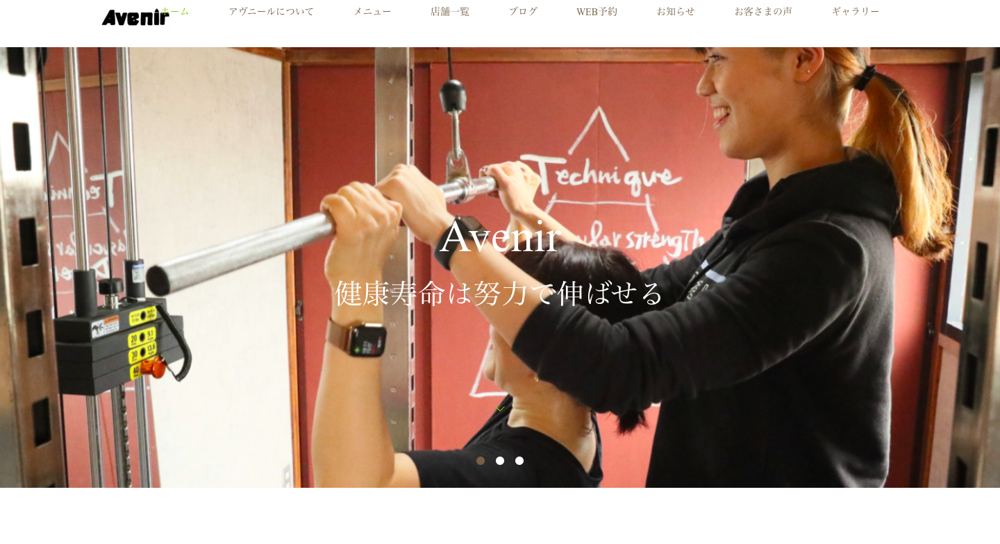

<!DOCTYPE html>
<html lang="ja">
<head>
    <meta charset="UTF-8">
    <meta name="viewport" content="width=device-width, initial-scale=1.0">
    <title>Yusei Terada 〜portfolio~</title>
    <link rel="stylesheet" href="./scss/style.css">
    <link href="https://use.fontawesome.com/releases/v5.6.1/css/all.css" rel="stylesheet">
</head>
<body>
    <!--ヘッダー-->
    <header class="header">
        <nav class="header-wrap">
            <ul>
                <li class="header-list border"><a href="#profile"><i class="fas fa-user"></i>PROFILE</a></li>
                <li class="header-list border"><a href="#skills"><i class="fas fa-pencil-alt"></i>SKILLS</a></li>
                <li class="header-list border"><a href="#portfolio"><i class="fas fa-laptop"></i>PORTFOLIO</a></li>
            </ul>
        </nav>
        <div class="top">
            <div class="top-wrap">
                <h1 class="top-name">Yusei Terada</h1>
                <p class="top-p">portfolio</p>
            </div>
        </div>
    </header>
    
    <!--プロフィール-->
    <main class="main">
        <section class="profile" id="profile">
            <div class="title-wrap">
                <h2 class="h2-title"><i class="fas fa-user"></i>PROFILE</h2>
            </div>
            <div class="profile-wrap">
                <div class="profile-top">
                    <div class="profile-img">
                        
                    </div>
                    <div class="profile-name-qa-wrap">
                        <div class="profile-name">
                            <h1>寺田 雄星</h1>
                            <p>Terada Yusei</p>
                        </div>
                        <div class="profile-qa">
                            <p>生年月日 / 1996年11月1日生</p>
                            <p>血液型 / O型</p>
                            <p>mail / <a href="https://mail.google.com/mail/?view=cm&to=monkeyyusei1101@gmail.com">monkeyyusei1101@gmail.com</a></p>
                            <p>趣味 / <br>野球・・・学生時代に約10年間していました<br>旅行・・・学生時代に自転車で大阪から九州まで行ったり、ヒッチハイクなどをしました<br>読書・・・2020年は約50冊程読みました<br>筋トレ・・・15分から30分ほど体を動かすのが日課です</p>
                        </div>
                    </div>
                </div>
                <div class="profile-about">
                    <p>大阪経済大学経済学部卒業後、永和信用金庫に入庫。金融機関の将来性への不安から新たなスキルを身に付けたいと考えるようになり、IT業界へ興味を持つ。入庫後1年で退職し、2020年4月より独学でプログラミングの勉強を始める。</p>
                </div>
                <div class="profile-pr">
                    <h3 class="main-h3">自己PR</h3>
                    <p>向上心が高いことが一番の強みです。学生時代は、新しい知識を身につけたいという理由から宅地建物取引士や簿記2級、証券外務員などの資格を取得しました。読書も昨年は50冊ほど読破しました。<br>向上心に次いで自信があるのが一つの物事を長く続けられる継続力です。学生時代は野球を10年ほど続け、学生時代のアルバイトも大学を卒業するまで一つの場所で続けました。<br>IT業界は未経験の業種となりますが、持ち味である向上心と継続力を活かして成長していきたいです。</p>
                </div>
            </div>
        </section>
        <section class="skills" id="skills">
            <div class="title-wrap">
                <h2 class="h2-title"><i class="fas fa-pencil-alt"></i>SKILLS</h2>
                <p>スキルセット一覧です</p>
            </div>
            <div class="skill-wrap">
                <div class="skill">
                    <p class="skill-title">資格</p>
                    <p class="star">ITパスポート試験</p>
                    <p class="star">AWS認定クラウドプラクティショナー</p>
                </div>
            </div>
            <div class="skill-wrap">
                <div class="skill">
                    <p class="skill-title">HTML</p>
                    <p class="star">★★★★☆</p>
                </div>
                <div class="skill">
                    <p class="skill-title">CSS</p>
                    <p class="star">★★★☆☆</p>
                </div>
                <div class="skill">
                    <p class="skill-title">jQuery</p>
                    <p class="star">★★☆☆☆</p>
                </div>
                <div class="skill">
                    <p class="skill-title">Vue.js</p>
                    <p class="star">★★☆☆☆</p>
                </div>
                <div class="skill">
                    <p class="skill-title">Wordpress</p>
                    <p class="star">★☆☆☆☆</p>
                </div>
                <div class="skill">
                    <p class="skill-title">Premiere Pro</p>
                    <p class="star">★★★☆☆</p>
                </div>
            </div>
            <!--ランクを付けて表示したい-->
        </section>
        <section class="portfolio" id="portfolio">
            <div class="title-wrap">
                <h2 class="h2-title"><i class="fas fa-laptop"></i>PORTFOLIO</h2>    
                <p>Web制作の記録です</p>
            </div>
            <div class="portfolio-wrap">
                <div class="portfolio-img-wrap">
                    <a href="https://yusei1101.github.io/isara-copy/">
                        
                    </a>
                </div>
                <h3 class="main-h3">iSARA.life模写制作LP</h3>
                <p>HTML / CSS / JavaScript（jQuery）</p>
                <p>Githubで公開 / レスポンシブ対応</p>
                <a href="https://github.com/yusei1101/isara-copy">ソースコードはこちら</a>
            </div>
            <div class="portfolio-wrap">
                <div class="portfolio-img-wrap">
                    <a href="http://baseball-stats.s3-website-ap-northeast-1.amazonaws.com/">
                        
                    </a>
                </div>
                <h3 class="main-h3">プロ野球個人成績2020</h3>
                <p>HTML / CSS / JavaScript（Vue.js）</p>
                <p>AWSで公開 / レスポンシブ対応</p>
                <a href="https://github.com/yusei1101/vue-baseball-stats">ソースコードはこちら</a>
            </div>
            <div class="portfolio-wrap">
                <div class="portfolio-img-wrap">
                    <a href="https://yusei1101.github.io/countdown">
                        
                    </a>
                </div>
                <h3 class="main-h3">2021年カウントダウン<br>&<br>生誕経過サイト</h3>
                <p>HTML / CSS / JavaScript（Vue.js、jQuery）</p>
                <p>Githubで公開 / レスポンシブ対応</p>
                <a href="https://github.com/yusei1101/countdown">ソースコードはこちら</a>
            </div>
            <div class="portfolio-wrap">
                <div class="portfolio-img-wrap">
                    <a href="https://yusei1101.github.io/portfolio/">
                        
                    </a>
                </div>
                <h3 class="main-h3">当サイト</h3>
                <p>HTML / CSS / JavaScript（jQuery）</p>
                <p>Githubで公開 / レスポンシブ対応</p>
                <a href="https://github.com/yusei1101/portfolio">ソースコードはこちら</a>
            </div>
            <div class="portfolio-wrap">
                <div class="portfolio-img-wrap">
                    <a href="https://avenir-training.com">
                        
                    </a>
                </div>
                <h3 class="main-h3">パーソナルジムホームページ</h3>
                <p>HTML / CSS / Wordpress</p>
                <p>エックスサーバーで公開 / レスポンシブ対応</p>
                <p>テンプレートを利用したカスタマイズ</p>
            </div>
        </section>
    </main>

    <!--フッター-->
    <footer class="footer">
        <p class="copyright">copyright©︎ Yusei Terada ~portfolio~</p>
    </footer>

    <!-- トップページへ戻るボタン -->
    <div class="top-page">Topへ</div>
    <script src="https://code.jquery.com/jquery-3.5.1.js"></script>
    <script src="./index.js"></script>
</body>
</html>